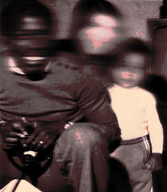
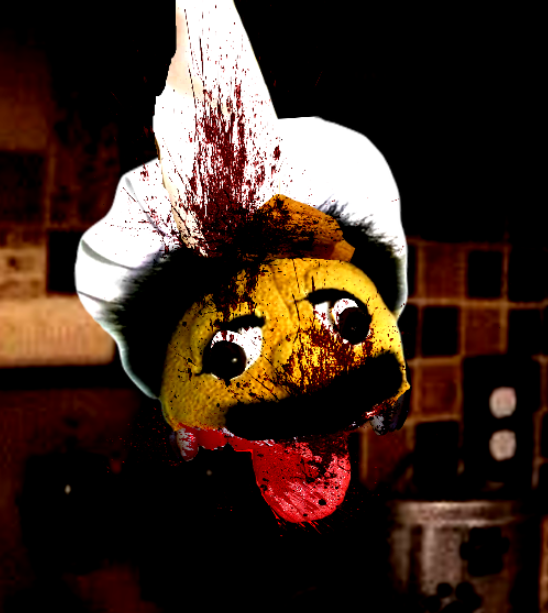
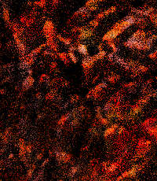

Episodes
The Food That Looks…
Marvin's New Dance!
Misery
Games
house
Find Brooklyn Guy!
Cast
THIRTYACRE, LOGAN
THIRTYACRE, LANCE
NETHERTON, CHRIS
STANTON, ULYSSES
JIMENEZ, MINELLI II
Characters
Marvin
Guy?
Junior
Cody
Joseph
Chef Pee Pee
Shrek
Store
News
Popular characters
These character pages are frequently searched or popular right now:
Marvin
Junior
Cody
Joseph
Shrek
User submissions
Golden Nugget

Sandman
Guy?
Zack??
Chef Pee Pee
Silhouette
Judy Nutkiss
Mama Luigi
Click me!!
Mr. Goodman
Duggie

Junior Junior
Patrick
Bitterman

Little Sweaty Meats
Lore?
Escapees
Day of Imbalance